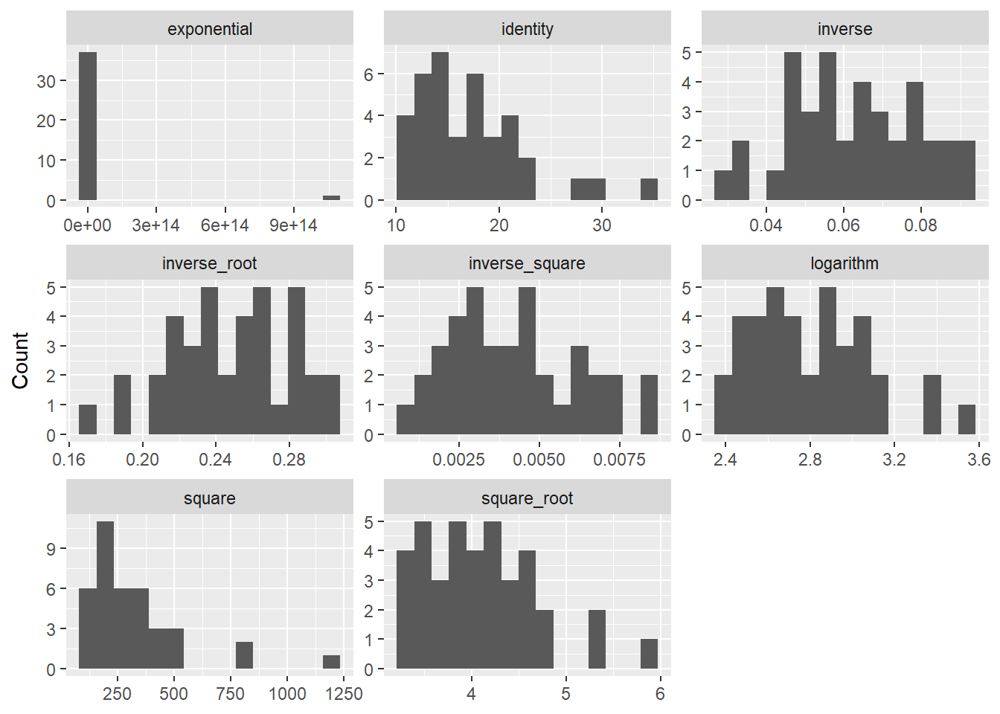

data <- data |>
mutate(dage = abs(wage - hage)) Using functions
In this part you will learn about the use of functions (such as “take the square root”, ‘”taking a substring of a string”, or “draw a random number” —the computer version of “flipping coins”— to accomplish various tasks in constructing or modifying variables. Functions may be embedded in arithmetic expressions, and they may also be composed. For instance, we may take the logarithm of a random variate with a uniform distribution on [0, 1]. We present the information, mostly in the context of assignments, under a number of headers:
Numeric functions
String functions
Other kind of functions
Examples
Absolute difference dage of the age of husband (hage) and wife (wage):
Equivalent, using if_else():
data <- data |>
mutate(dage = if_else(wage > hage, wage - hage, hage - wage)) The natural logarithm of 1 + wagerate. Note that log(x) is missing for x <= 0.
data <- data |>
mutate(lnwage = log(1 + wagerate)) The maximum wage rate of the husband (hwage) and wife (wwage):
data <- data |>
mutate(maxwage = pmax(hwage, wwage)) Income chopped at 100000:
data <- data |>
mutate(rinc = pmin(inc, 100000)) Length, number of characters, in the string variable cityname:
data <- data |>
mutate(nch = nchar(cityname)) Display the number of full weeks in a year. The R Console can be used as an interactive calculator.
floor(365 / 7) Embellish unrounded output.
paste("number of full weeks in year =", round(365 / 7, 2)) Numeric functions
- The following functions in R are important for the creation of new variables or the modification of existing variables. Make sure that you understand the functions. If you are uncertain, think of examples, and verify. In particular, check how to access the help pages for their definitions. Be sure to understand that these functions exist, roughly what they are good for, and how to find the details at the moment you really want to use them.
| R | Description |
|---|---|
sqrt(x) |
square-root of x |
abs(x) |
the absolute value of x |
pmin(x, y) |
the minimum of x and y |
pmax(x, y, z) |
the maximum of x, y, and z |
round(x) |
x rounded to nearest integer |
floor(x) |
x rounded down |
ceiling(x) |
x rounded up |
x %% y |
remainder after dividing x by y |
exp(x) |
the exponential function |
log(x) |
the natural logarithm |
log10(x) |
the logarithm to the base 10 |
Functions and ordinary expressions may be mixed. For instance, you may write:
data <- data |>
mutate(lp = (log(p) / log(1 - p)) - 4) Functions may also be nested, or composed. For instance:
data <- data |>
mutate(fx = log(1 + exp(x))) Use parentheses if you are unsure about the priority of operators. What comes first, division or subtraction? Many inexperienced users will not remember, it is division. We recommend using parentheses rather than relying on your memory.
For each of these functions, what do you think will happen if the argument, or any of the arguments, is missing? Under what other conditions can each of these functions return a missing value? Experiment, or read the help pages.
- Check the meaning of the following mathematical R functions.
| R | Description |
|---|---|
x %in% c(a, b, c, ...) |
logical: x equals a, b, c, … |
between(x, a, b) |
logical: x ≥ a and x ≤ b |
if_else(x, y, z) |
if x, then y else z |
case_when() |
recode values using multiple conditions |
cut(x, breaks) |
recode a continuous variable into intervals |
pmin(pmax(x, a), b) |
x if a ≤ x ≤ b, b if x > b, a if x < a |
String functions
In R, string manipulation is commonly performed using functions from the stringr package, which is part of the tidyverse. Make sure that you understand the purpose of the following functions. If you are uncertain, think of examples and verify them.
| R | Description |
|---|---|
str_length(s) |
length of string |
str_to_lower(s) |
convert string s to lowercase |
str_to_upper(s) |
convert string s to uppercase |
str_detect(s, t) |
test whether string t occurs in string s |
str_locate(s, t) |
position of string t in string s |
str_sub(s, n, m) |
substring of s from position n to m |
str_trim(s) |
drops leading and trailing blanks from s |
as.numeric(s) |
convert string s to a number |
as.character(x) |
convert object x to a string |
You may compute the length of a string variable str as:
data <- data |>
mutate(len = str_length(str)) To turn a string variable into lowercase:
data <- data |>
mutate(ustr = str_to_lower(str)) As a more demanding task, split a string variable str into the first word (w1) and the remainder of the string (rest), where the first word is defined as all characters up to the first space.
data <- data |>
mutate(
fspace = str_locate(str, " ")[, 1],
w1 = if_else(
!is.na(fspace),
str_sub(str, 1, fspace - 1),
str
),
rest = if_else(
!is.na(fspace),
str_sub(str, fspace + 1),
""
)
) Does this code yield correct results if str has one or more leading spaces? Can you fix it? Can you think of a way to extract the second word?
The functions as.numeric() and as.character() convert between strings and numeric values. When as.numeric() cannot interpret a string as a number, it returns NA.
In the assignments below you will apply string functions to manipulate dates and name-address information.
Other functions in R
There are plenty of other types of R functions. We do not expect you to remember all details of these or any of the other functions you encounter here, just that you get an understanding of the kinds of tasks that may be accomplished with functions, and how to access information about them when needed.
(a) Random number generation
runif(1)draws a random number from the uniform distribution on the interval [0,1). Each time you invokerunif(), the function returns a different value.sample(1:5, 1)returns 1, 2, …, 5 each with the same probability.rbinom(1, 1, 0.75)generates a 1 with probability 0.75, and a 0 with probability 0.25.rbinom(1, 1, 0.5)generates 0 and 1 with equal probability.rnorm(1, 1.3, 2.5)generates a random number from a normal distribution with mean = 1.3 and standard deviation = 2.5.
For instance, to randomly select each observation in the data with probability 0.5:
data <- data |>
mutate(filter = rbinom(n(), 1, 0.5))
data |> filter(filter == 1) |>
summarise(mean_inc = mean(inc, na.rm = TRUE)) See ?Distributions for additional random number generators.
(b) Missing value handling
The function is.na() returns TRUE if a value is missing and FALSE otherwise.
For instance, to select all observations that are not missing on the variables age, medu, and gender:
data <- data |>
mutate(
hasmiss = is.na(age) |
is.na(medu) |
is.na(gender) )
data |> filter(!hasmiss) or equivalently
data <- data |>
mutate(
notmiss =
!is.na(age) &
!is.na(medu) &
!is.na(gender) )
data |>
filter(notmiss) (c) Miscellaneous
row_number()returns the observation sequence number, that is, 1 in the first observation, 2 in the second observation, etc. One common application is to generate a case identifier:
data <- data |>
mutate(respnr = row_number()) n()returns the number of observations. Within.byorgroup_by(), it returns the number of observations in the group.
To list some variables for the oldest person in a household, indexed by hrespnr:
data |>
filter(age == max(age), .by = hrespnr) |>
select(age, edu, smoking) Assignments
- Use
sbs399.dta. We focus on the variablehrinc(hourly income).
What is the value of the mean and median of the untransformed variable?
For each of the following transformations, find the mean and the median:
exp(hrinc),hrinc*hrinc,sqrt(hrinc),log(hrinc),hrinc(i.e., untransformed, identity),1/sqrt(hrinc),1/hrinc, and1/(hrinc*hrinc).For which transformation, including the no-transformation, is the variable most symmetrically distributed? You may gauge the symmetry of a distribution by its skewness. Recall: a positive skewness indicates a distribution tilted to the left, a negative skewness indicates a distribution tilted to the right. Compare using the function
skewness()from the packagemoments.Create histograms and density plots of these and some additional transformations of the variable. Apply your code to the first 50 cases only.
- The dataset
sbs399contains the variablehrinc, the hourly wage rate. The values are decimal numbers such as 3.5. Generate transformations of this variable using functions:
round
hrincto the nearest integer (so any value between 3.5 and 4.5 should be rounded to 4);round the variable down (so any value between 3 and 4 is rounded to 3);
round the variable up (so any value between 3 and 4 is rounded to 4);
round in multiples of 10 (so any value between 5 and 15 is rounded to 10);
clip to the range [10,50], i.e., values below 10 are set to 10; values above 50 are set to 50; values between 10 and 50 are returned unchanged.
- The dataset
sbs399contains the educational level of the father and mother of respondents (feducandmeducrespectively). We define the educational resources of the parents (peduc) as the maximum of the educational levels of the parents.
Give code to create peduc.
Do you think that this conceptualization is also appropriate if education is seen as a proxy for attitudes?
- You want to compute the geographic distance
d(h,w)between a subject’s home address and a subject’s work address. Your data contain the geographic coordinates(home_x, home_y)and(work_x, work_y)of the home and work location, expressed as east-west and north-south distances from a reference point in the Netherlands, in units of 1 km, rounded. Give R code that computes the distancedbetween home and work, assuming a flat earth. Recall that by Pythagoras’ theorem
\[d(h,w) = \sqrt{(home_x - work_x)^2 + (home_y - work_y)^2}\]
Did you dream of ever using this in the social sciences? Round the distance in meaningful units, as locations are rounded in 1 km units, it does not make sense that distance is expressed in a finer unit, say meters. Perform these computations for the home_work dataset that includes 3 cases only.
For the interested reader: How do you obtain such location information yourself? If the dataset contains address information or postal codes, it is possible to use geocoding tools to obtain geolocations. Such tools can add new variables with cleaned address information and geographic coordinates.
Using these geolocations you may compute, as explained above, the distance as the crow flies assuming a flat earth. If you pedantically want to account for the curvature of the earth, R also has packages that compute distances using geographic coordinates on the surface of the earth. More advanced students can even take into account that due to its spinning, the earth has to a high degree of accuracy an ellipsoid shape, not a ball shape. Then again, for a small country as the Netherlands such fine points are fully immaterial.
Additional tools and packages provide access to other map services, such as the travel distance and travel time between two locations, distinguishing travel by car, by public transportation, by bike, and walking. One can also add variables with facilities, e.g., the number of schools within a 2 km radius around a location.
- Use the dataset
hin95_birthdates.
This dataset contains the respondent’s birth date
rbirth, a numeric variable recording the birth dates in the formatddmmyy. Note that the number has 5 digits ifdd < 10, and 6 digits otherwise. Construct three variablesd_rbirth,m_rbirth, andy_rbirthwith the day, month, and year in which the respondent was born. Use the functions%%andfloor().List the first twenty observations to verify your variable construction.
To check your work, you may actually reconstruct the original coding from the three variables, and verify that the reconstructed variable matches the original variable.
The file
hin95_birthdatescontains the respondent’s birth date as a string variablerbirth_strin the format"ddmmyy". The string is of length 5 ifdd < 10, and of length 6 otherwise. Use string functions, to construct three variables with the day, month, and year in which the respondent was born.The dataset
hin95_nawcontains name, address, and city information. This is a random selection of address information that we purchased from the Dutch mail agency for the “Households in the Netherlands in 1995” project. In this assignment we do some manipulations of this dataset with address information.
The string variable
postcodecontains postcodes, compare zip codes, in the Dutch format1234 AB. Construct a new numeric variablenpcodethat contains the numeric part. Thus, from1234 ABwe want to extract the part1234. This is useful to merge information that is being organized with respect to geographic information, e.g., for contextual analyses. First take the substring of the first initial characters, i.e., convert1234 ABto a string1234. Then convert this string to a number, thus the string1234to the number1234. Be sure to understand the difference. What is the mean value ofnpcode? How do you interpret this number?The string variable
plaatscontains the alphabetic string for the city in which people live. In R, string variables can often be used directly, but for modelling and categorical summaries it is often useful to convert such a string variable into a factor. Convertplaatsinto a factor. The numeric codes themselves are not important, this is a nominal variable. Obviously, you do not want to do this by hand for all approximately 600 cities. Read the help page forfactor()to find out more about this conversion.
Answers
Make sure this file is in the same R Project as the data folder. Use relative file paths, not full paths to your computer.
library(tidyverse)── Attaching core tidyverse packages ──────────────────────── tidyverse 2.0.0 ──
✔ dplyr 1.2.1 ✔ readr 2.2.0
✔ forcats 1.0.1 ✔ stringr 1.6.0
✔ ggplot2 4.0.3 ✔ tibble 3.3.1
✔ lubridate 1.9.5 ✔ tidyr 1.3.2
✔ purrr 1.2.2
── Conflicts ────────────────────────────────────────── tidyverse_conflicts() ──
✖ dplyr::filter() masks stats::filter()
✖ dplyr::lag() masks stats::lag()
ℹ Use the conflicted package (<http://conflicted.r-lib.org/>) to force all conflicts to become errorslibrary(haven)
library(moments)
sbs399 <- read_dta("data/sbs399.dta")1. Transformations of hourly income
The mean and the median of the untransformed variable.
sbs399 |>
summarise(
mean_hrinc = mean(hrinc, na.rm = TRUE),
median_hrinc = median(hrinc, na.rm = TRUE)
)# A tibble: 1 × 2
mean_hrinc median_hrinc
<dbl> <dbl>
1 18.2 16.1# mean and median of hrincBefore transforming, check the range of hrinc. Several of the transformations below are undefined for values of zero or less.
summary(sbs399$hrinc) Min. 1st Qu. Median Mean 3rd Qu. Max. NAs
0.10 13.40 16.10 18.16 20.20 100.00 1381 # log() and 1/x are problematic if hrinc can be 0 or negative
# exp() overflows to Inf for large values of hrincCreate all eight transformations in one step.
transformed <- sbs399 |>
transmute(
identity = hrinc,
exponential = exp(hrinc),
square = hrinc * hrinc,
square_root = sqrt(hrinc),
logarithm = log(hrinc),
inverse_root = 1 / sqrt(hrinc),
inverse = 1 / hrinc,
inverse_square = 1 / (hrinc * hrinc)
)
# transmute() keeps only the newly created variablesCompute the mean, median, and skewness for each transformation.
transformed |>
pivot_longer(
everything(),
names_to = "transformation",
values_to = "value"
) |>
summarise(
n_finite = sum(is.finite(value)),
mean = mean(value[is.finite(value)]),
median = median(value[is.finite(value)]),
skewness = skewness(value[is.finite(value)]),
.by = transformation
) |>
arrange(abs(skewness))# A tibble: 8 × 5
transformation n_finite mean median skewness
<chr> <int> <dbl> <dbl> <dbl>
1 square_root 1969 4.17e+ 0 4.01 2.04
2 logarithm 1969 2.81e+ 0 2.78 -2.34
3 identity 1969 1.82e+ 1 16.1 4.42
4 square 1969 4.19e+ 2 259. 9.05
5 exponential 1969 1.09e+41 9820675. 15.6
6 inverse_root 1969 2.54e- 1 0.249 18.9
7 inverse 1969 8.05e- 2 0.0621 25.0
8 inverse_square 1969 1.59e- 1 0.00386 25.6 # transformations are sorted by absolute skewness, so the most symmetric comes first
# is.finite() removes both NA and the Inf values produced by exp() and 1/xThe transformation with the skewness closest to zero is the most symmetric one. Note how strongly exp() and 1/(hrinc*hrinc) distort the distribution: a single large value dominates the mean, while the median barely moves.
Histograms of the transformations, for the first 50 cases only.
transformed |>
slice(1:50) |>
pivot_longer(
everything(),
names_to = "transformation",
values_to = "value"
) |>
filter(is.finite(value)) |>
ggplot(aes(x = value)) +
geom_histogram(bins = 15) +
facet_wrap(~transformation, scales = "free") +
labs(x = NULL, y = "Count")
# scales = "free" is needed because the transformations live on very different scalesDensity plots of the same transformations.
transformed |>
slice(1:50) |>
pivot_longer(
everything(),
names_to = "transformation",
values_to = "value"
) |>
filter(is.finite(value)) |>
ggplot(aes(x = value)) +
geom_density() +
facet_wrap(~transformation, scales = "free") +
labs(x = NULL, y = "Density")# a density plot smooths the histogram, which is helpful with only 50 cases2. Rounding the hourly wage rate
sbs399 <- sbs399 |>
mutate(
hrinc_round = round(hrinc),
hrinc_down = floor(hrinc),
hrinc_up = ceiling(hrinc),
hrinc_tens = round(hrinc / 10) * 10,
hrinc_clip = pmin(pmax(hrinc, 10), 50)
)
# round() rounds to the nearest integer
# floor() always rounds down
# ceiling() always rounds up
# dividing by 10, rounding, and multiplying by 10 gives multiples of 10
# pmin(pmax(x, 10), 50) clips the values to the interval [10, 50]Inspect the result for the first ten cases.
sbs399 |>
select(hrinc, hrinc_round, hrinc_down, hrinc_up, hrinc_tens, hrinc_clip) |>
slice(1:10)# A tibble: 10 × 6
hrinc hrinc_round hrinc_down hrinc_up hrinc_tens hrinc_clip
<dbl> <dbl> <dbl> <dbl> <dbl> <dbl>
1 12.8 13 12 13 10 12.8
2 NA NA NA NA NA NA
3 21.2 21 21 22 20 21.2
4 14.4 14 14 15 10 14.4
5 NA NA NA NA NA NA
6 23 23 23 23 20 23
7 28.2 28 28 29 30 28.2
8 17.8 18 17 18 20 17.8
9 21.1 21 21 22 20 21.1
10 NA NA NA NA NA NA # compare the transformations side by sideCheck the range of the clipped variable.
range(sbs399$hrinc_clip, na.rm = TRUE)[1] 10 50# the minimum should be 10 and the maximum 50A warning about round(): R rounds halves to the nearest even number, so round(2.5) is 2 and round(3.5) is 4.
round(c(0.5, 1.5, 2.5, 3.5, 4.5))[1] 0 2 2 4 4# this is the IEEE standard, not a bug3. Educational resources of the parents
sbs399 <- sbs399 |>
mutate(
peduc = pmax(feduc, meduc)
)
# pmax() compares the two variables element by element, respondent by respondent
# max(feduc, meduc) would return one single number for the whole datasetCheck the new variable.
sbs399 |>
select(feduc, meduc, peduc) |>
slice(1:10)# A tibble: 10 × 3
feduc meduc peduc
<dbl+lbl> <dbl+lbl> <dbl+lbl>
1 1 [elementary [lo]] 2 [lower vocat [lbo]] 2 [lower vocat [lbo]]
2 3 [lower second [mavo]] 1 [elementary [lo]] 3 [lower second [mavo]]
3 1 [elementary [lo]] 2 [lower vocat [lbo]] 2 [lower vocat [lbo]]
4 1 [elementary [lo]] 1 [elementary [lo]] 1 [elementary [lo]]
5 2 [lower vocat [lbo]] 2 [lower vocat [lbo]] 2 [lower vocat [lbo]]
6 1 [elementary [lo]] 1 [elementary [lo]] 1 [elementary [lo]]
7 5 [higher second [vwo]] 2 [lower vocat [lbo]] 5 [higher second [vwo]]
8 1 [elementary [lo]] 1 [elementary [lo]] 1 [elementary [lo]]
9 1 [elementary [lo]] 1 [elementary [lo]] 1 [elementary [lo]]
10 2 [lower vocat [lbo]] 3 [lower second [mavo]] 3 [lower second [mavo]]# peduc should equal the larger of the two parental education levels# Is the maximum appropriate if education proxies attitudes?
#
# For resources the maximum is defensible: the better educated parent can
# supply help, contacts, and knowledge regardless of the other parent.
# For attitudes the argument is much weaker. An attitude is not a resource
# that the household draws on; children are exposed to both parents, so a
# mean would represent the climate at home better than a maximum.
# The mother's education is often the stronger predictor of socialisation
# outcomes, which the maximum ignores completely.4. Distance between home and work
home_work <- read_dta("data/home_work.dta")
# adjust the file name if the dataset is stored in a different formathome_work <- home_work |>
mutate(
d = sqrt((home_x - work_x)^2 + (home_y - work_y)^2),
d_km = round(d)
)
# Pythagoras' theorem on a flat earth
# the coordinates are rounded to whole kilometres, so reporting d to the
# nearest kilometre is the finest unit that is still meaningfulhome_work# A tibble: 3 × 7
id home_x home_y work_x work_y d d_km
<dbl> <dbl> <dbl> <dbl> <dbl> <dbl> <dbl>
1 1 1 2 12 11 14.2 14
2 2 2 1 -5 6 8.60 9
3 3 3 4 3 4 0 0# inspect all three cases5. Splitting a numeric birth date
hin95_birthdates <- read_dta("data/hin95_birthdates.dta")
# adjust the file name if the dataset is stored in a different formathin95_birthdates <- hin95_birthdates |>
mutate(
d_rbirth = floor(rbirth / 10000),
m_rbirth = floor((rbirth %% 10000) / 100),
y_rbirth = rbirth %% 100
)
# rbirth has the form ddmmyy
# dividing by 10000 and rounding down leaves the day
# the remainder after dividing by 10000 is mmyy; dividing that by 100 leaves the month
# the remainder after dividing by 100 is the yearList the first twenty observations.
hin95_birthdates |>
select(rbirth, d_rbirth, m_rbirth, y_rbirth) |>
slice(1:20)# A tibble: 20 × 4
rbirth d_rbirth m_rbirth y_rbirth
<dbl> <dbl> <dbl> <dbl>
1 200249 20 2 49
2 150927 15 9 27
3 10469 1 4 69
4 260346 26 3 46
5 300969 30 9 69
6 100861 10 8 61
7 141148 14 11 48
8 130935 13 9 35
9 101038 10 10 38
10 281071 28 10 71
11 61031 6 10 31
12 261164 26 11 64
13 140761 14 7 61
14 280565 28 5 65
15 171030 17 10 30
16 50347 5 3 47
17 280466 28 4 66
18 190969 19 9 69
19 50369 5 3 69
20 250424 25 4 24# verify that the three components match the original numberReconstruct the original variable and compare.
hin95_birthdates |>
mutate(
check = d_rbirth * 10000 + m_rbirth * 100 + y_rbirth
) |>
summarise(
n_different = sum(check != rbirth, na.rm = TRUE)
)# A tibble: 1 × 1
n_different
<int>
1 0# the number of mismatches should be zero6. Splitting a string birth date
hin95_birthdates <- hin95_birthdates |>
mutate(
d_str = str_sub(rbirth_str, 1, str_length(rbirth_str) - 4),
m_str = str_sub(rbirth_str, -4, -3),
y_str = str_sub(rbirth_str, -2, -1)
)
# the year is always the last two characters and the month the two before that,
# so counting from the end with negative positions works for strings of
# length 5 as well as length 6
# whatever remains at the front is the dayList the first twenty observations.
hin95_birthdates |>
select(rbirth_str, d_str, m_str, y_str) |>
slice(1:20)# A tibble: 20 × 4
rbirth_str d_str m_str y_str
<chr> <chr> <chr> <chr>
1 200249 20 02 49
2 150927 15 09 27
3 10469 1 04 69
4 260346 26 03 46
5 300969 30 09 69
6 100861 10 08 61
7 141148 14 11 48
8 130935 13 09 35
9 101038 10 10 38
10 281071 28 10 71
11 61031 6 10 31
12 261164 26 11 64
13 140761 14 07 61
14 280565 28 05 65
15 171030 17 10 30
16 50347 5 03 47
17 280466 28 04 66
18 190969 19 09 69
19 50369 5 03 69
20 250424 25 04 24 # compare with the numeric solution of the previous assignmentConvert the components to numbers and compare with assignment 5.
hin95_birthdates |>
mutate(
d_num = as.numeric(d_str),
m_num = as.numeric(m_str),
y_num = as.numeric(y_str)
) |>
summarise(
n_different = sum(
d_num != d_rbirth | m_num != m_rbirth | y_num != y_rbirth,
na.rm = TRUE
)
)# A tibble: 1 × 1
n_different
<int>
1 0# both routes should produce identical results7. Postcodes and city names
hin95_naw <- read_dta("data/hin95_naw.dta")
# adjust the file name if the dataset is stored in a different formatExtract the numeric part of the postcode.
hin95_naw <- hin95_naw |>
mutate(
pcode_str = str_sub(postcode, 1, 4),
npcode = as.numeric(pcode_str)
)
# first take the substring "1234", which is still a string
# then convert that string to the number 1234Check the conversion.
hin95_naw |>
select(postcode, pcode_str, npcode) |>
slice(1:10)# A tibble: 10 × 3
postcode pcode_str npcode
<chr> <chr> <dbl>
1 2742 CL 2742 2742
2 3014 AH 3014 3014
3 6006 JL 6006 6006
4 6511 EC 6511 6511
5 3817 AR 3817 3817
6 6658 XJ 6658 6658
7 5912 CD 5912 5912
8 3522 CE 3522 3522
9 1077 ZD 1077 1077
10 3084 RN 3084 3084# pcode_str is left-aligned text, npcode is a right-aligned numberhin95_naw |>
summarise(
mean_npcode = mean(npcode, na.rm = TRUE)
)# A tibble: 1 × 1
mean_npcode
<dbl>
1 4639.# the mean of npcode# How should this mean be interpreted?
#
# Strictly speaking it should not be interpreted at all. Postcodes are
# labels, not quantities: the difference between 1000 and 2000 does not
# measure anything. Dutch postcodes are assigned roughly by region, so the
# mean says something vague about the geographic centre of gravity of the
# sample, but it is not a meaningful average of anything the respondents
# have. The variable is useful for merging with regional data, not as a
# variable in an analysis.Convert the city name into a factor.
hin95_naw <- hin95_naw |>
mutate(
plaats_f = factor(plaats)
)
# factor() creates the categories automatically from the distinct values
# the levels are sorted alphabetically by defaultCheck the result.
nlevels(hin95_naw$plaats_f)[1] 273# the number of distinct citieshin95_naw |>
count(plaats_f, sort = TRUE) |>
slice(1:10)# A tibble: 10 × 2
plaats_f n
<fct> <int>
1 AMSTERDAM 59
2 ROTTERDAM 44
3 'S-GRAVENHAGE 30
4 DORDRECHT 20
5 UTRECHT 17
6 VENLO 16
7 NIJMEGEN 13
8 ZEIST 13
9 ARNHEM 12
10 EINDHOVEN 12# the ten most frequent citiesNote that identical cities spelled differently, or with leading or trailing spaces, become separate levels. Cleaning the string first avoids this.
hin95_naw |>
mutate(
plaats_clean = factor(str_to_upper(str_trim(plaats)))
) |>
summarise(
levels_raw = nlevels(factor(plaats)),
levels_clean = nlevels(plaats_clean)
)# A tibble: 1 × 2
levels_raw levels_clean
<int> <int>
1 273 273# if the two counts differ, the raw variable contained spelling inconsistencies